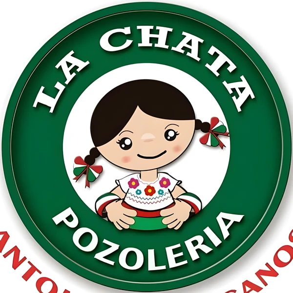

Sábado y domingo, 3:30 a 10:00 pm · Jesús R. Macías y 20 de Noviembre
Todavía no agregas nada de la carta. Ábrela y toca “+” en lo que se te antoje.
TotalTe lo confirmamos por WhatsApp
Solo efectivo en el local.